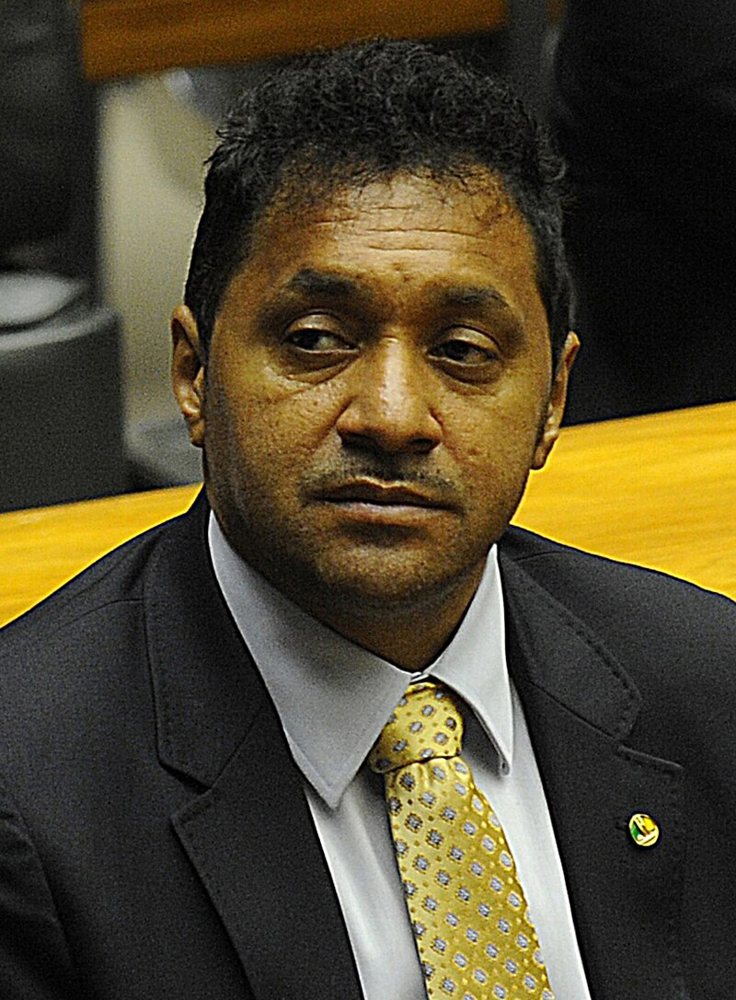
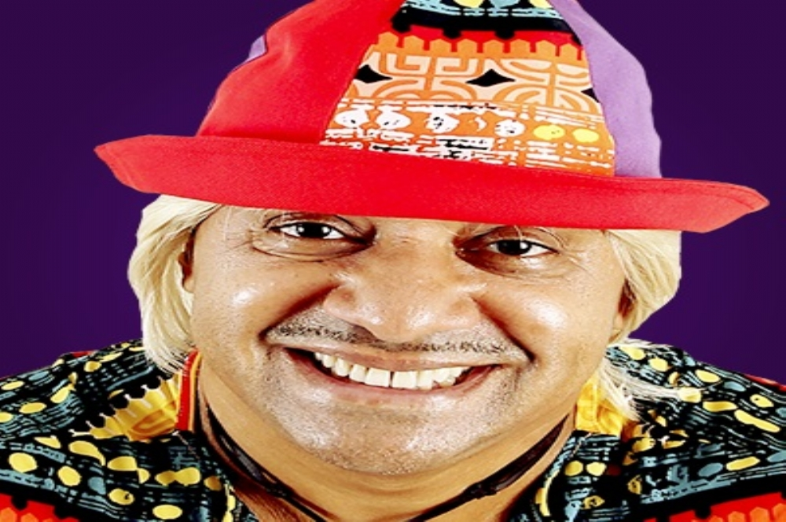
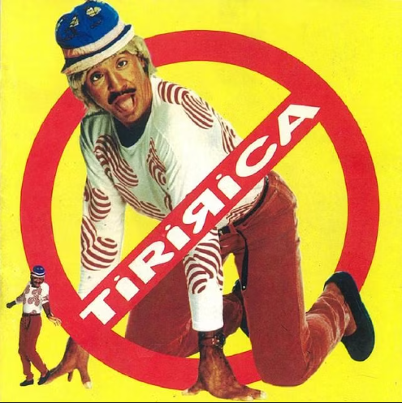

Francisco Everardo Oliveira Silva (Itapipoca, 1 de maio de 1965), conhecido pelo nome artístico de Tiririca, é um cantor, compositor, palhaço, humorista e político brasileiro, filiado ao Partido Liberal

Circo
Aos oito anos, começou a trabalhar em circo na cidade natal Itapipoca, onde atuava como palhaço e a alcunha de Tiririca o acompanha desde a infância, devido à personalidade muito forte de que gozava. O apelido foi dado pela mãe que costumava dizer que o filho vivia "tiririca da vida", quando era mal-humorado ou zangado. Frase mais famosa: "Ora menino, só sendo menino mesmo, menino!" Nesta época, as apresentações de Tiririca em barracas — espécies de pequenos circos, eram muito comuns no Nordeste do Brasil. Tiririca viveu por muito tempo em Cascavel, Pindoretama, Aquiraz e outras cidades do litoral leste do Ceará, onde tinha seus pequenos circos que animavam as cidades e países.

Devido ao grande sucesso alcançado nesses espetáculos, os barraqueiros da região se cotizaram e pagaram as primeiras mil cópias do CD de estreia, que bateu índices recordes de vendagem mais de 1,5 milhão de cópias, isso graças à exaustiva execução nas rádios da canção de estilo regional nordestino "Florentina", no repertório deste. Distribuída inicialmente pelas regiões de Juazeiro do Norte e Pernambuco, pouco tempo depois a música se tornou conhecida nacionalmente. A gravadora Sony Music comprou o disco e o lançou nacionalmente. Tiririca também bateu recordes de audiência em programas televisivos, que anteriormente pertenciam ao grupo Mamonas Assassinas e outra canção que obteve relevante sucesso foi Eu Sou Chifrudo. O primeiro CD também causou muita polêmica, pois continha a canção Veja os cabelos dela, considerada por muitos como racista. Não obstante, os discos foram apreendidos, a execução das canções pelas rádios foi proibida e Tiririca foi processado por racismo. Ao fim, ele acabou sendo absolvido da acusação. A canção Florentina foi acusada ser um plágio de Catarina do Trio Mineiro.[4] Em 1997, gravou o segundo CD (Tiririca), com destaque para as canções O Padroeiro do Ceará, Índia e Ele é Corno mas é meu Amigo. Depois de um breve afastamento da mídia motivado por problemas pessoais, ressurge em 1999 com o lançamento do terceiro CD (Dança da Rapadura) , lançado pela independente Indie Records. O maior sucesso do disco foi a canção Casado com uma Viúva . Outra gravação de Tiririca foi a canção "Índia", de Cascatinha e Inhana. A grande diferença, porém, é que durante a gravação inteira Tiririca só cantou a primeira frase da letra original: "Índia seus cabelos" . Em 1998, o cantor foi preso em Minas Gerais, acusado de agredir sua esposa Rogéria Márcia da Silva, no dia seguinte, Rogéria tirou a queixa e o cantor foi liberado.

No dia 3 de outubro de 2010, Tiririca tornou-se o Deputado Federal mais votado do Brasil das eleições deste ano, eleito pelo estado de São Paulo com 1 348 295 (6,35%) votos.[9] Especialistas afirmaram que tal fenômeno pode ser explicado por voto de protesto.[10] Sua campanha e eleição foram marcadas por polêmicas. Tiririca lançou sua candidatura para deputado federal pelo estado de São Paulo por meio do Partido da República. Utilizou bordões como "O que é que faz um deputado federal? Na realidade, eu não sei. Mas vote em mim que eu te conto", e "Pior do que tá não fica, vote Tiririca". Tais bordões debochados levaram um candidato a deputado estadual a representá-lo junto ao Ministério Público Eleitoral, sob o fundamento de que estaria afrontando o Congresso Nacional e o poder público em geral. A representação, contudo, foi arquivada.[11] Posteriormente, Tiririca foi apontado como analfabeto pela Revista Época, condição essa que impediria uma candidatura.[12] Acusado de falsificação, Tiririca confessou que não escreveu a declaração de escolaridade de próprio punho, como exige a legislação eleitoral, mas teria sido ajudado por sua mulher. Em 30 de outubro de 2010, a defesa de Tiririca alegou que ele sofreria de Transtorno de Desenvolvimento da Expressão Escrita, uma deficiência motora que o impediria de segurar uma caneta com firmeza. A defesa afirmou que Tiririca contou com o auxílio de sua mulher para escrever de próprio punho a declaração de alfabetização, exigência da lei eleitoral brasileira. A mulher de Tiririca teria apoiado sua mão sobre a mão do marido para ajudá-lo a firmar a caneta no momento da redação. Segundo a defesa, por causa da deficiência, Tiririca também estaria impossibilitado de fazer testes de escrita. Todavia, tal explicação contradiz o vídeo gravado pela Revista Época em setembro, que deu origem às suspeitas de analfabetismo. As imagens mostram Tiririca dando autógrafo a um fã. Em pé, de improviso, Tiririca segura um caderno com a mão esquerda e rabisca uma assinatura circular com a mão direita. O humorista ainda desenha o que seriam as letras de seu nome. No vídeo, ele não demonstra nenhum sinal de dificuldade para segurar a caneta.[13] No dia 11 de novembro de 2010, Tiririca foi submetido a testes de leitura e escrita em audiência na Justiça Eleitoral (1ª Zona Eleitoral de São Paulo). Durante o teste, Tiririca leu o título e o subtítulo de duas páginas de um jornal. Também foi submetido a um ditado, de trecho do livro 'Justiça eleitoral – uma retrospectiva'. Teve de reproduzir o seguinte trecho: “A promulgação do Código Eleitoral, em fevereiro de 1932, trazendo como grandes novidades a criação da Justiça Eleitoral”. Na ocasião, o Ministério Público oficiou pela impugnação da candidatura, tendo em vista que o candidato não teria alcançado 30% do desempenho mínimo desejável.[14][15] No entanto, o juiz eleitoral que convocou o teste constatou, em dezembro de 2010, que Tiririca tinha certa dificuldade em escrever, mas a limitação era “irrelevante” porque a Justiça Eleitoral só considera inelegíveis os analfabetos absolutos, e não os funcionais. A promotoria recorreu da decisão e após Tiririca ter sido diplomado e assumido a vaga de Deputado Federal em 2011, o caso foi para o Supremo Tribunal Federal, já que Tiririca passou a ter foro por prerrogativa de função. Em 21 de novembro de 2013, o STF concluiu que Tiririca é alfabetizado e a denúncia do Ministério Público foi arquivada.[16][17] Em 17 de dezembro, o candidato foi o primeiro a ser diplomado na Assembleia Legislativa em São Paulo. Tiririca foi aplaudido pelas pessoas que estavam nas galerias. Afirmou pretender focar seus projetos nas áreas de educação e cultura, na defesa de artistas circenses em geral e ciganos. Tiririca integrou a Comissão de Educação e Cultura da Câmara dos Deputados.[18] Em abril de 2011 se envolveu em controvérsia ao empregar dois amigos humoristas como assessores, sem obrigá-los a cumprir expediente diário na Câmara e gratificando-os com salário de R$ 8 mil cada.[19] Em 2012 ele foi cotado como pré-candidato para a prefeitura de São Paulo.[20][21][22][23][24][25] No mesmo ano, Tiririca foi um dos 25 indicados ao Prêmio Congresso em Foco, que elege o melhor parlamentar do ano. Tiririca se destacou por ser um dos nove deputados (dentre 513) que participaram de todas as sessões de votação na Câmara em seu mandato.[26][27] Em 2013, em um artigo da revista Financial Times, cujo título era "O palhaço brasileiro perdeu o sorriso" (Brazil's clown loses his smile), revelou estar decepcionado com a atuação da casa onde trabalha: "Você passa o dia inteiro fazendo nada, só esperando para votar alguma coisa enquanto as pessoas discutem e discutem".[28] Ainda em 2013, Tiririca foi um dos 15 deputados sem faltas nos dias de votação na Câmara.[29] Reeleições
Em 2014, Tiririca volta a se candidatar à Câmara Federal, pelo mesmo partido, o PR.[30] Foi reeleito com 1 016 796 votos, 336 970 a menos que nas eleições de 2010, sendo o segundo mais bem votado, perdendo apenas para Celso Russomanno (PRB). "Em 2010 ganhei por voto de protesto e 2014 por voto consciente", afirmou na época.[31] Em 2015, Tiririca foi condenado a pagar uma indenização aos cantores Roberto Carlos e Erasmo Carlos por parodiar a música O Portão nas eleições de 2014.[32] Ainda em 2015, surgiu nas redes sociais uma fake news que o apontava como provável sucessor de Dilma Rousseff em caso de impeachment.[33] Em 2016, Tiririca foi um dos deputados que votaram a favor do pedido de impeachment da presidente Dilma Rousseff.[34][35][36] Já durante o Governo Michel Temer, votou a favor da PEC do Teto dos Gastos Públicos.[36] Em abril de 2017 foi contrário à Reforma Trabalhista.[36][37] Em agosto de 2017 votou a favor do processo em que se pedia abertura de investigação do então presidente Michel Temer.[36][38] Em 6 de dezembro de 2017, o deputado Tiririca anunciou que deixaria a vida pública. Em seu primeiro discurso na Câmara dos Deputados, ele disse que o motivo da sua decisão era a vergonha que sentia por causa da sua participação durante anos na política e no parlamento. Ele afirmou que viu acontecimentos vergonhosos no Congresso, mas recuou asseverando que não pretendia generalizar e que nunca iria falar mal dos ex-colegas. Ele também pediu que os deputados tivessem mais atenção com o povo e declarou que foi vítima de preconceito devido à sua condição de palhaço profissional. Tiririca concluiu assegurando que saía de cabeça erguida, mas que muitos dos deputados que o ouviam não teriam coragem para tanto.[39] Porém, desistiu da ideia. Em 4 de agosto, anunciou oficialmente que concorreria a reeleição como deputado federal pelo PR.[40] Em 7 de outubro de 2018, Tiririca foi reeleito deputado federal com 453 855 votos, sendo o quinto mais votado.[41][42] Declarou patrimônio de 480 mil.[43] Votou contra a Reforma da Previdência, sendo o único do seu partido a votar não.[44] Segundo dados do Congresso em Foco, considerando-se até novembro de 2021, foi o deputado do PL (que voltou a usar o nome antigo em 2019) que menos acompanhou as orientações do Governo Bolsonaro em seus votos: 58% das vezes.[45] Neste mês, o então presidente da República Jair Bolsonaro tornou-se colega partidário de Tiririca, filiando-se ao PL.[46] Em 2 de outubro de 2022, com o número 2255, foi reeleito com 71.754 votos, sendo o elegido com menor votação no Estado de São Paulo, que possui 70 vagas.[47] De "puxador" em outrora, foi "puxado" por votações expressivas de correligionários, como Eduardo Bolsonaro, Carla Zambelli e Ricardo Salles.[42] Em sua propaganda eleitoral, voltou a imitar Roberto Carlos (parodiou reclamação de Roberto com uma pessoa da plateia e ironizou sua mudança de número), que novamente o processou, tendo a ação do cantor sido arquivada pelo ministro do STF Lewandowski.[48] O número (2222) que usava desde seu primeiro pleito, em 2010, foi transferido pelo PL para Eduardo Bolsonaro, o que fez Tiririca, em maio, afirmar que não seria candidato, alegando traição, falta de comunicação oficial e citou que não poderia mudar de legenda em razão do fim da janela partidária.[49][43][50] Ao TSE, declarou patrimônio de 26 mil.[43] Em outubro de 2023, votou a favor da taxação dos "super-ricos"
Para receber mais blogs registe seu email